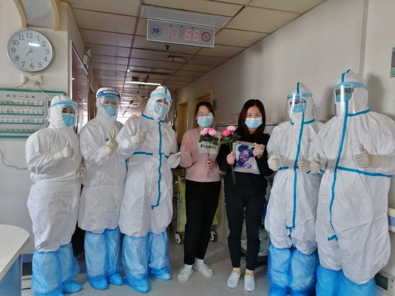
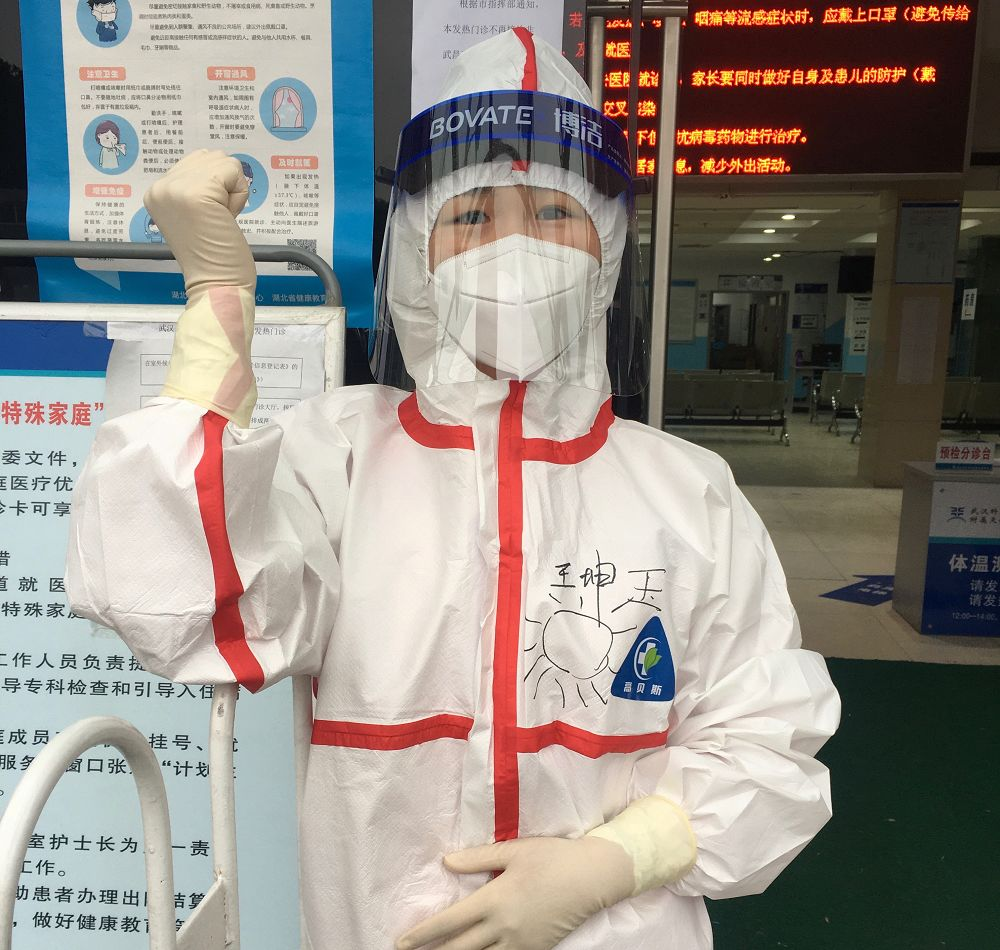

抗击过非典的护士长，来了武汉
原文链接 备份链接 文/六筒 李岩半年前刚去过武汉，和家人去旅游，主要想看看黄鹤楼。那还是夏天，热气蒸得人头上冒烟。高温挡不住蜂拥的游客，摩肩接踵，拥塞的车辆在大道上艰难挪动。“真是个大都市”，她想。 李岩是河北医科大学第二医院呼吸与危重 …

尤其在最初仓皇无措的阶段，女性群体居多的一线护士站在了最前方，迎接急风骤雨，撑起最初的希望
文 |《财经》记者 刘以秦 陈亮 信娜 王小
编辑 | 谢丽容
又到一年一度3月8日国际妇女节，对中国所有女性，特别是一直坚守疫区中心武汉的数百万女性来说，今年无疑格外凝重。有人还在最危险的一线奋战，有人已经香消玉陨，有人仍经受着病毒折磨。
经历一个多月生死拼搏后，中国抗击新冠疫情已经走到攻坚时刻。截至2020年3月7日24时，全国当日确诊新增病例103例，武汉市新增确诊病例74例，单日确诊新增人数终于降至两位数。但从全国来看，截至3月8日15时，全国累计报告确诊病例80859例，累计死亡病例3100例，累计治愈出院57172例，疫情造成的损失和伤害是空前的，抗击疫情的进展也是空前的。
如今，整个中国的疫情蔓延已初步得到控制，这是各方共同努力的结果，尤其离不开坚守在一线的万千医护人员的努力。不仅是留守武汉的上万名医护人员，还有4万名从全国各地逆行而来的医疗救援队。他们奋力救人的故事，感动并激励着疫区内外亿万民众，与一线医生们并肩战斗的，正是数量更多的医护人员，其中绝大部分是女性。
“医护团队是一个很容易被忽视的团队，我们的医生有多重要，我们的护理姐妹们就有多重要。”上海医疗救治专家组组长、华山医院感染科主任张文宏近期在接受媒体采访时表示，大家都在歌颂医生，但这是不够的，比较完整的说法应该是医护人员，还有广大老百姓，大家都是一起努力的。
从年初至今近两个月，陪伴数万新冠患者最久的是成千上万的护士姐妹们，她们不仅要照顾病情，还要关注病人的生活需求和心理安慰。
到3月8日，《财经》三位女记者坚守武汉疫区38天的报道过程中，先后采访了多位坚守抗疫一线的护士们，听她们讲述与疫情抗争的经历，也说到她们的个人经历和喜乐悲欢，有心酸，有温暖，有紧张，也有期待和信心。
1、社区护士夏雪：曾被确诊治疗，又申请回到岗位
江汉区某社区卫生服务中心护士 夏雪（化名）：“那天，一步一挪，搬了十几个氧气筒，我恨自己力气太小了”

2月16日，夏雪（右三）出院，离开武汉红十字会医院，开始14天的院外隔离
3月7日，夏雪在等待最后一次核酸检测结果。这之前，她已经做了四次。一次结果阳性，她住进了武汉红十字会医院隔离病房。两次阴性结果，她被允许出院，隔离14天。如果最后两次结果仍为阴性，她便能重回一线。夏雪是武汉江汉区某街道社区卫生服务中心的一名护士。不过，现在她的一线在武汉红十字会医院，作为发热隔离病房的一名护士，护理因新冠病毒而感染的住院病人。
一切要回到46天前。1月21日，上午10点，在家轮休的夏雪接到护士长的电话，询问她能否到武汉红十字会医院支援。她想都没想便答应下来，“我们有自己的责任，派我们到哪里就到哪里”。那时，新冠病毒可人传人的消息已在大街小巷游走。放下电话，她沉了沉气：“我大概知道是去做什么。”夏雪说，武汉遭遇新冠肺炎疫情，红十字会医院肯定缺人手。
1月22日下午3点，她和其他来支援的医护一同参加了一场培训，普及新冠肺炎知识和如何防护。那天，夏雪眼前的红十字会医院有些陌生，急诊科塞满了人，医生被患者围起来，门口挂号的队伍一直排到门外。这样的场景她从未见过，哪怕是在流感季。反常其实是有预兆的，夏雪想起从11月末开始的社区卫生中心，有一些流感症状的病人，常规输液十几天后仍没效果，还是发热畏冷。到了红十字会医院，发现还是如此。她心里嘀咕，之前在卫生中心的病人是不是也感染了这个病毒。
1月23日，武汉封城，也是夏雪第一天正式进入红十字会工作的日子。她承担四楼发热病区的护士工作，该病区共60多张床位。她的记忆没有和封城联系起来，而是摆在眼前，第一次见到、穿上的防护服。在老师的指导下，把防护服套在身上并不难，戴上口罩，眼罩，锁紧防护服，直到把自己里外裹住，一瞬间，缺氧的感觉弥漫。夏雪大口喘着气，却还是觉得无法呼吸，胸口像闷着一颗大石头。
因为一时无法适应，她瘫坐在椅子上。几分钟后，脑门便浸出汗水。即使这样，每天还是会有几个时刻让她时不时感到后怕：出汗太多，口罩顺着耳朵滑下来；手套突然间破了。“有种防不胜防的感觉”，夏雪说。
所以日常的防护都变成了习惯。即使回到医院安排的隔离酒店，两人一间，她和室友也都会戴着口罩聊天或休息。“这已经是我们的一种自觉的行为”，夏雪说，一方面怕自己传染别人，另一方面，也要保护自己。
基本的护理包括测量体温、脉搏、呼吸氧饱和，还需要输液，换药。病区里呼叫铃几乎没断过，响个不停。除了常规工作，因为人手有限，其他活也得临时顶上去。夏雪所在病区的病人大多需要吸氧，有时得靠氧气筒。有一次，她一个人来回搬运了十几个氧气筒，把病人身边的空筒换成满的。她用手抓着钢铸氧气筒，一步一挪，把氧气筒固定在推车上。再推着100多斤的氧气筒蹭到病人身边。回顾在病区的日子，这是她印象中最难的一次。她责备自己的力气不够大，挪一次至少要歇十几分钟。
进入2月，医院安排每个科室的医护人员进行CT排查，那些天，夏雪有些喉咙痛，一边担心着自己会不会“中招”，一边安慰自己不会的，“平时经常跑步，也没怎么感冒，免疫力还是不错的”。结果显示她的左下肺有感染，还需继续确诊。2月2日，核酸结果为阳性。夏雪没法继续工作，成为了红十字会十楼病区内的病人。从病区护士到病人，她有些懊恼，“有时觉得自己不应该得病，不然可以帮助更多人，现在得要别人来帮助我”。
所以她的一切目标都是早点好起来，早点出院。夏雪上网浏览关于新冠肺炎的各种知识，调整心态，劝告自己好好吃饭，哪怕实在吃不下。11天后，她出院了。这一点上，她颇有些小自豪，“我住院时间真的挺短，隔壁床16天以后才出院的”。
眼看着最后一次核酸检测结果就要出来了，夏雪按捺不住心情，几天前，便向领导询问，我的病已经好了，需要我去哪里?
2、门诊护士长王坤玉：曾被病人骂哭，还是闲不下来
武汉科技大学附属天佑医院发热门诊护士长王坤玉：“觉得星星很亮的人，是没有看见护士的眼睛”

病人像潮水一样涌来，武汉科技大学附属天佑医院发热门诊开始24小时值班，一般感染性疾病科门诊是只白天上班，为此，医院抽调了全院各科室的医生、护士来加强发热门诊的力量。
1月22日，客服中心护士长王坤玉接到护理部主任的电话，抽她到发热门诊担任护士长。因为之前她在客服中心就负责发热分诊，门诊大厅是第一道防线，分诊时，所有病人进入大厅都要测体温、咨询。王坤玉意识到严重程度是超乎想象的，“可能跟以前我们说到的一些比如说流感或者其他传染病感觉不太一样，所以当时接到主任的电话时，我没有意外，是意料之中的事，这是医院对我的信任”。
80后，24岁时成为最年轻的护士长，王坤玉对自己的免疫力相当的自信。即便知道这是传染性很强的新病毒，她也没有害怕，和发热门诊的40多名护士互相鼓励，从春节前一直坚守到现在。
刚到发热门诊时，每天基本上十几个小时连轴转，王坤玉一直没有休息过，医院看不下去了，强制要求她休一天，即便在家，各种电话不停，需要处理各种事情。
1月29日，天佑医院成了定点医院，可是改造还没有全部完成，只能一边改造一边收治病人，大量的病人集中滞留在发热门诊，但家属和病人不能理解，王坤玉记得有一天，家属将病人抬进来往地上一放，然后就不管了，挡住了其他人的就诊，家属还开始吵闹。“怎么劝都不行，后来我和几位同事找到一个病床，把病人抬上去，把病人推到留观室住下了。”王坤玉回忆。
一个病人到医院后，先到发热门诊，第1步是预检分诊，第2步登记资料，因为现在国家要收集病人到各个医院的详细就诊信息，所以登记资料也很重要，第3步是挂号，然后才去候诊等待医生看诊。前三步都是门诊护士在操作。
作为护士长，要统筹流程、安排人员，以及处理紧急状况。当时每天都会有很多突发状况，一些病人很焦躁，家属的情绪也比较激动，他们的诉求很简单——要住院，得到有效的救治。“但实际上当时真得没办法解决，我的朋友和亲属也来找我，可我解决不了。”王坤玉说。
王坤玉不得不担负起疏导病人的情绪和家属的情绪，“我就是救火员，经常有病人家属说着说着就情绪化，开始踢桌子撂椅子。”她能做的就是解释、沟通、倾听、安抚，然后告诉他们下一步怎么做，解释武汉市目前的一些举措，他们可以得到哪些帮助。
有时，这些安抚比起一张床位来也是无力。2月3日，王坤玉哭了，是被病人骂哭的。她的同事说，“本来是心态很好的人，病人把压力都给她了。”
那段时间，王坤玉感受到各种情绪起伏，一些家属会很凶，一旦解决了住院问题，马上转变态度，对医护人员千恩万谢。
让她感动的是自己的同事。一些护士平时可能看起来很普通，在这种特殊的时候，工作热情高涨，尤其是一些老护士。其中一位护士还有几个月就要退休（护士退休年龄55岁）了，“我当时还跟领导说，这样的年龄就不要让她上班，可她们都照样坚持上班 。今年50岁的全科医学科的唐艳护士，从第1天起，就在发热门诊工作，从早上8点到下午6点，中间只有半小时休息时间吃午饭，到今天她还坚持在发热门诊”。
还有两年退休的张新萍护士，女儿在北京做律师，家庭条件不错。女儿打电话给她说，“不要上班了，你能请假就请假，实在不行就辞职，我养你，你不要在乎退休金”。她回答，“你妈干了一辈子，到最后遇到这种事逃跑了，那也太丢人了。”
“觉得星星很亮的人，是没有看见护士的眼睛”，这是一个很火的抖音视频，王坤玉和她的同事们看了视频，都很感动，“就好像你做了一些事情，有很多人会理解和支持你的。 ”
王坤玉所在的护士团队平均年龄较大，约45岁，但是她们都已经说好了，要坚持到疫情结束。“我闲不住，之后我还想去康复站继续工作（治愈后出院者康复的地方）。”王坤玉说。
3、援鄂护士长汪慧娟：从上海到武汉，记不清来几天了
复旦大学附属华山医院重症医学科护士长汪慧娟，支援武汉金银潭医院：“每天最舒爽的时刻就是摘下防护服的那一刻”

今天是来到武汉市金银潭医院的第45天，汪慧娟已经不记得来到武汉第几天了，只知道今天又是一个工作日。
1月23日，华山医院副院长马昕下发《关于组派医疗队援助湖北应对新型冠状病毒感染肺炎疫情的通知》后，汪慧娟等骨干力量第一时间就报名参加，同时在征求意向表上勾选了负责重症患者的选项。
报完名后，汪慧娟将消息告诉了丈夫，为了不影响更多家人的心情，她决定在吃完年夜饭后告诉父母、孩子。但通知等不到年夜饭后。除夕当天傍晚5点时，汪慧娟一家人正在包春卷，通知来了，上海第一批135名援鄂医疗队员需要立刻出发，她，来不及吃年夜饭。
放下手中未包完的春卷，汪慧娟向父母摊牌。短暂的告别之后，汪慧娟从房间内拖出早已收拾好的行李箱，向武汉出发。
一次性医用帽、一次性检查手套、一次性防护服、一次性鞋套、N95口罩、全面型呼吸防护器、防护面屏、护目镜……装满了22个行李箱。华山医院汪慧娟等4人带着22箱防护用品以及有些紧张的心情，在除夕深夜登上了前往武汉飞机。
农历鼠年第一个凌晨，上海医疗队飞机降落在武汉天河机场，黑漆漆、清冷是汪慧娟的第一感受。坐上前往酒店大巴，她第一次明白新闻里说的封城是什么意思。“没有一辆车，没有一名行人，震惊，太震惊。”她回忆道。
短暂的休息后，1月25日下午，汪慧娟参加了医疗队集体会议，学习新型冠状病毒感染的肺炎防控知识、医护人员的消毒及自我保护流程等。尤其是学习如何穿脱防护服，她格外认真。
汪慧娟常年在重症监护室工作，还经历过SARS时期的急诊，但穿脱防护服仍是第一次。当天下午华山医院援鄂四人，分别穿脱防护4到5次，并相互监督指出不足之处。
1月26日，汪慧娟进入金银潭医院开始工作。真正穿上防护服，要面对真实病人的时候，她有点害怕、紧张，这种害怕与紧张来自于对未知的恐惧，她不知道接下来要面对什么。在进入病房之前，新冠病人对她来说只是新闻中的人物。
一开始确实不太习惯。陌生的病房，陌生的同事，连找个针头都要询问金银潭医院的护士。同时，还要面对“难缠”的病人。
她负责的四人病房内，不仅有一名昏迷的病人，还有一名喜怒无常的病人——老胡。由于佩戴无创呼吸机会有不适感，老胡显得格外烦躁，不停扯掉呼吸机面罩。面罩一被摘下，老胡的血氧饱和度瞬间降到了70%，有时甚至降到50%。
正常的血氧饱和度在94%以上，如果低于这个数值，就是出现了供氧不足的现象。汪慧娟发现扯掉呼吸机面罩的老胡嘴唇都发紫了，立马好言安抚，并帮老胡戴上，一天摘—戴的动作要反复多次。
更有甚者，烦躁时老胡会提各种要求，一会儿要吃糖，一会儿要吃饼干，一会儿要穿绿衣服等等。没有护工的病房内，汪慧娟要承担护工的工作，满足老胡各种要求。进驻初期一天要工作8小时的汪慧娟笑称，有时候要和老胡“搏斗”8小时，“每当老胡人比较清醒对我说谢谢的时候，所有的疲惫都会消失。”
随着体系搭建完成、流程逐渐规范化，上海医疗队的轮班时间压缩到了4个小时。虽然比初期工作时间压缩了一半，但对汪慧娟来说仍是不小的挑战。为了不上厕所，站好岗，她选择上岗前不吃不喝，直到工作完成。
同时，防护服+口罩的胸闷感是每天必须克服的一件事，对汪慧娟来说，每天最舒爽的时刻就是摘下防护服的那一刻。
工作是艰辛的，生活必须是乐观的。汪慧娟把每天时间都安排得很满，打扫房间、睡觉休息、一天做三次广播体操、刷刷手机……
2月的某个下午，上海医疗队收到了来自上海知名面包房的点心。打开礼盒时，她惊喜地发现，里面还有一只玩偶熊，一瞬间“心都化了”。除此之外，锦江饭店的牛排、国际饭店的蝴蝶酥等一批批上海特产陆续“投喂”给上海医疗队。
随着一批批病人出院，武汉的春天到了，珞珈山的樱花即将绽放。汪慧娟在期待着一个日子：某一天收到通知，可以回上海赏花。
4、医疗队宣传员巴哈古丽：在方舱为病人跳舞的新疆姑娘
新疆第二批支援湖北医疗队宣传委员、联络员 巴哈古丽·托勒恒：“他们说我温暖了武汉，其实是武汉人民温暖了我”
2月12日，一则抖音视频火了，武汉客厅方舱医院内，一名来自新疆医疗队的医护人员为病患们跳起了新疆舞蹈。
武汉各方舱医院从2月6日开始收治病人，一开始，对于方舱医院的质疑声不断，有人认为临时改造的方舱医院条件不够好，还有人认为那是“大型交叉感染现场”。2月4日凌晨，新疆第二批支援湖北医疗队到达武汉，副领队巴哈古丽在学习了如何穿脱防护服后，2月11日进入武汉客厅方舱医院。
刚进去的一瞬间，方舱里的画面让她感到震撼，几乎所有的患者都躺在床上，没有什么动静，方舱里弥漫着焦虑、紧张的气氛，甚至有病人觉得毫无希望。
她走到方舱医院中央，拿起麦克风，说：“我是新疆来的哈萨克族的援助人员，我们这么远来武汉都不害怕，全国各地这么多医护人员都是为你们而来的，你们自己一定要振作起来。”
大家的情绪有些被调动起来了，她接着说，为大家表演两段舞蹈，一段新疆舞，一段哈萨克舞，“以观赏为主，想学的我也可以教。”
很快，一些人们被带动了起来，“很遗憾，穿着防护服，也只能尽力教一些脚步的步伐。”
由于缺少特效药，住院的病人们最需要的，就是增强免疫力，除了给他们提供充足的营养，提振精神，保持心情愉悦同样重要。在这些外地支援队的帮助下，每天下午，方舱医院内都会组织大家一起跳跳舞，唱唱歌。
当天结束在方舱医院的工作出来时，巴哈古丽点开手机，发现有38个未接电话，她吓一跳，以为自己犯了什么错误。她妈妈也打电话过来，进方舱之前，她并未告诉家人，家人以为她只是来武汉做一些后勤和联络物资方面的工作。
妈妈告诉她，在网上看到了她在方舱里面跳舞的视频，感觉以前在家跳的都没有这么好，“她就一直问我在里面感觉怎么样，像个记者一样，还让我不要拖大家的后腿。”
很快，方舱医院开始陆续有病人出舱，一天，一位男性患者痊愈后走出方舱，一直大喊“我出来了！太开心了！真好！”武汉人的热情也感染了巴哈古丽，她说，武汉真的是英雄的城市。
她发现，几乎所有的武汉居民，都在不计代价的为抗击疫情做出自己的贡献。为救援队提供支持的车队工作人员，对于她们提出的任何需求，没有说过“不”字，“酒店也是想方设法给我们增强营养，他们自己不舍得吃不舍得喝，都省下来给我们。”
方舱里的病人越来越少，从最早的1000多名确诊患者，到800名，300名，100名。巴哈古丽看到逐渐空掉的病床，哭了，她既开心，又不舍。一些出舱的病人还和她保持着联系，互相加油打气。“他们说我温暖了武汉，其实是武汉人民温暖了我”。
3月7日下午，武汉客厅方舱准备休舱，病患们离开之前，她和其他医护人员们一起，在方舱里为女性患者们举办了一次小型的联欢会，庆祝属于女性的节日。医护人员们准备了全新的保暖内衣套装，新疆救援队还带来了家乡特产，红枣、核桃等，“都是我们平时自己也舍不得吃的。”
5、隔离病房护士李慧：穿尿不湿，也得坚持下去
武汉科技大学附属天佑医院隔离病房护士李慧：“曾经有想过，我是要一辈子做护士吗？但现在我觉得必须得把这个任务坚持下去。”

90后女生李慧，是第一批在武汉科技大学附属天佑医院呼吸二病区值班的护士之一。这里住的都是确诊的新冠肺炎病人，上班时间要全副“武装”：防护服、护目镜、手套、鞋套一样不能少。
李慧主动申请来呼吸二病区工作后，先把妹妹送回爸妈那里，妹妹今年15岁，和她住在一起， “这毕竟是传染病，有感染的风险”。李慧没有和父母说她的新岗位，她原计划春节回家和父母团聚，选择上夜班，可以连休两天，刚好可以回家过年。不过，自到隔离病房后，就一直没能再回父母家。
一开始虽然医院还是正常排班，但她和同事们经常要加班才能把工作做完，当时正常排班是8个小时，夜班是9点到第二天早上的8点，11个小时。后来医院管理层将排班改成6小时一换。
一个夜班，两个人，大约照顾三、四十个病人。每天的工作给病人做检查、输液或者是其他的治疗护理等。刚开始，李慧也不是很了解新冠病毒，没想到传染力那么强，后来了解的越多，有点紧张害怕起来，但是看大家都是照样工作，和同事们说一说，很快就恢复了常态。
每天上班要提前到，护士长会帮她们穿上防护服，防护服、护目镜、口罩、鞋套、手套全副武装后，才能进入隔离病房。“穿得很全，干活就不那么顺溜了，比如用戴手套打针不如之前顺畅。”李慧说，同样工作，现在需要的时间会长一点。
一旦进入病房，6个多小时都不能出来，也不能上卫生间，因为一旦出来或者去卫生间，就意味着一套防护服废了，“我们都很节省的，会控制喝水”。
刚开始每天一天下来，耳朵会疼，眼睛也不舒服。戴护目镜不久就会雾气模糊，于是大家慢慢地摸索出来经验，试过用酒精、碘伏、洗手液来擦洗护目镜，后来发现洗手液洗一下，然后用卫生纸擦干，护目镜能保持约4个小时不模糊，李慧和伙伴们就抢在这四个小时先把重要的、细致的治疗工作先抓紧干完。
戴N95口罩时间长了，会勒到耳朵疼。她们改造牛奶箱子的提手，用两个钩子勾住口罩，直接戴到脑后，耳朵就不疼了。生理期的时候，她们得穿“尿不湿”，“比较方便一些，不然，6个多小时真得挺难 ”。
大概1月底到2月中旬是最紧张的阶段，李慧每天工作时长将近11个小时，下班后倒头就睡，睡到第二天再去上班。李慧说，“体重减了几斤，也算是另外的收获。 ”
以前学护理时，李慧对这一行并没有太多的热爱，是家里人的建议。有时她也会想，是不是要在护士这个工作上坚持下去？但是当疫情来了的时候，她再也没想过这个问题，“就觉得应该坚守岗位，心里也有种安慰，感觉能帮到别人是一件好事 ”。
李慧到隔离病房工作，是她的堂姐和堂姐夫最先知道，然后发到家里的微信群，爸妈知道了。从来没有发过视频的爸爸，当天下午就打来视频电话，李慧很惊讶，“我大概知道他为什么要给我打电话，纠结了一下才接，我爸说，你做这么大的决定，为什么没有跟我讲？然后他说着说着自己哭起来，整得我也挺激动的。 ”
最后，爸爸说“有些事情总有人要去做的，所以他支持我，然后他等我回家过年”。那天是大年初七。
李慧想，疫情结束之后，如果医院那个时候隔离的病人还没有出院，肯定会选择继续在隔离病区上班。之后无论是回原科室还是去其他科室轮转学习一下都可以，“既然不能为国家做贡献，那就坚守自己的岗位，如果能在自己的岗位上做好的话，也挺不错的。”

▲点击图片查看更多疫情报道
责编 | 黄端 duanhuang@caijing.com.cn
本文为《财经》杂志原创文章，未经授权不得转载或建立镜像。如需转载，请在文末留言申请并获取授权。
原文链接 备份链接 文/六筒 李岩半年前刚去过武汉，和家人去旅游，主要想看看黄鹤楼。那还是夏天，热气蒸得人头上冒烟。高温挡不住蜂拥的游客，摩肩接踵，拥塞的车辆在大道上艰难挪动。“真是个大都市”，她想。 李岩是河北医科大学第二医院呼吸与危重 …
原文链接 备份链接 有人说我们这样的医护是志愿者，不是“国家队”。但这个我们不在乎。我在这里的同事，一个原来是自己开诊所、把诊所停业跑来支援的医生说：“我既然来了就是把生死置之度外了。”我没有去想他说的那么大的问题，我只想能尽到自己的职 …
原文链接 备份链接 还在酒店隔离的病人想进方舱，因为这里起码有药吃，有医生看，悬起的心有着落。一旦进了方舱，目标转向，变成“出去”，心又高悬，痊愈者期盼出院，重症者亟待转院。假如没有方舱，他们就无处可去。 记者 | 驳静（发自武汉） 进 …
原文链接 备份链接 从第一例患者入院，金银潭医院已超负荷运转近两个月。医生、护士、病人、志愿者，都在为新冠病毒不眠不休，昼夜奋争。绝望和希望、晦暗和明朗、苦涩和感动，也交织纵横，罩住整座江城。 全文7410字，阅读约需14分钟 点击下图 …
原文链接 备份链接 住进武昌方舱的第二天，付丹看到有人在垃圾站收拾，将在地上扔得乱七八糟的垃圾捡起来放到垃圾箱里。她感到有些奇怪，清洁工怎么没有穿防护服呢。一问，原来那人是住在同一个病区的病友，住在159号床。 文***｜******* …